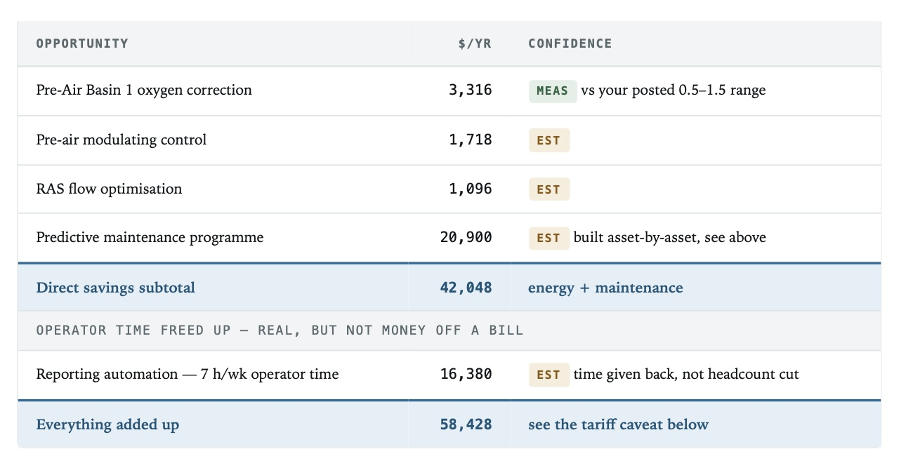

Case study · Membrane-bioreactor water reuse
$42,050 a year from the data alone.
$92,200 with instrumentation.
A water-reuse plant handed over 25 days of its own historian — 1,001 tags, 7.2 million recorded values — and nothing else. No new instruments, no site visit. Every finding was checked against the ranges the plant itself posts on its sampling schedule rather than against generic industry numbers, and every figure is labelled either measured or estimated.
- Process
- Flat-sheet MBR at 0.4 µm; recycled water for indoor reuse, irrigation and fire suppression
- Load
- 105,700 gpd measured — 71% of its 148,100 gpd design
- Input
- 25 days of existing SCADA history · 1,001 tags · 7.2M values
- New hardware
- None
The plant
Flow arrives at an influent lift station, passes a 2 mm fine screen, then runs through anoxic basins into a membrane basin and an aerated pre-air basin with return-activated-sludge recirculation. Flat-sheet membranes at 0.4 micron separate the water; permeate goes through chlorine contact and effluent pumping into a reclaimed reservoir that serves fire suppression, indoor flushing and irrigation.
It came online in 2008, and it is run well. Effluent turbidity holds a median of 0.11 NTU against a posted range of 0.05–0.6, and nothing in the audit suggests otherwise. Every item in it is about protecting that record with less power and less manual effort.
What AquaMesh did
Read the export. Model each signal's normal behaviour and each pair of parallel units — two basins, two RAS pumps, two membrane trains — then look for the pairs that stopped agreeing and the signals that stopped moving.
Then price it. Blower power from the isentropic relation using measured airflow and measured discharge pressure; pump power from measured flow and head; runtime from historian totaliser deltas. Where a number had to be estimated, it says so and shows the method, so the plant's own engineer can check the arithmetic.
What it found
What the plant could not see from its own screens.
-
3.6×
One basin running above its own oxygen range
The plant's sampling schedule posts pre-air dissolved oxygen at 0.5–1.5 mg/L. Basin 2 sits right in that band at a median of 0.49 mg/L. Basin 1 held a median of 5.35 mg/L on every day of the record — roughly eleven times its twin — with its blower command pinned at 99.99%. Both draw on the same shared airflow, which points at an air-split problem rather than a setpoint: a valve or a damper, cheap to investigate and cheap to correct. Worth $3,316 a year in blower power, plus the nitrogen-removal risk of carrying that oxygen into the anoxic zone. The audit's own caveat: a fouled DO probe can sit on an offset and still respond to airflow, so the reading gets verified against a calibrated handheld before anyone touches a valve.
-
456 → 358 scfm
Membrane scour air above what the flux needed
Airflow tracked the permeate rate almost perfectly (R² = 1.00) at a ratio well above the manufacturer's specific-scour guidance. Trimming to the guideline at the measured flux, with the existing controls, is $5,391 a year — the largest no-capital line on the list.
-
13–28 starts/hour
Reclaimed pumps short-cycling
Against a manufacturer guideline near six starts an hour — and one asset logged 143 an hour, a start every 25 seconds. Every start draws locked-rotor current and heats the windings far more than running does. It is a control deadband, not a purchase: $3,500 a year in motors, starters and contactors.
-
16 of 16
Reuse totalisers that never moved
Every irrigation zone has a volume totaliser, and not one changed in 25 days. Until they record, nobody can show how much recycled water went to beneficial reuse rather than disposal — about $7,300 a year once the split can be managed. A configuration fix, not a purchase.
Also flagged and priced in the report: return-activated-sludge pumps at 84% and 39% duty, two turbidimeters disagreeing eightfold at the 90th percentile, and an MLSS tag reporting a flat 10.00 for the whole window.
In the software
The same findings, live in the platform.
The audit is not a document that arrives and then ages. Those 25 days are loaded into AquaMesh against 108 mapped process tags, and each finding sits in front of the operator with its action, its evidence tags and its annual value attached — to acknowledge, accept, resolve or dismiss.
Because the platform keeps recomputing on a rolling window, its figures move a little from the ones fixed in the PDF: the same excursion, the same setpoint, priced on more recent data.

$92,200/yr
saved a year, fully instrumented
- $42,050 saved from existing data
- $58,428 saved with operator time
- $75,800 saved, instrumented
Where the savings sit
$42,050 a year needs no capital at all: the scour setpoint the optimizer solved on the plant's own data, off-peak shifting on the two largest pumping loads, the air split in Basin 1, the pump-cycling deadbands, and a predictive-maintenance programme assembled from run hours rather than a budget percentage. Add the seven hours a week of reporting the data can produce by itself and it reaches $58,428.
The instrumentation phase is what takes it to $92,200, and none of it is needed to start. A $55,000 package pays back in about 1.6 years: automatic cleaning so the DO probes can be trusted, the zone totalisers restored, pressure optimisation on the largest load, vibration monitoring on four blowers, power metering that converts $21,148 of estimate into measurement, and AquaSpectra reading the stream continuously — calibrated BOD, plus spectral change analysis where weekly grabs are the only record today.
Book a demo
What the audit says against itself
The largest single uncertainty is the tariff. Everything here is priced on a residential time-of-use schedule blending to $0.362/kWh. At 406,610 kWh a year this plant is well past residential scale and would normally sit on a commercial schedule at roughly half that blended rate — on which the same physical savings are worth about half of what is shown.
The kilowatt-hours are measured either way; only their price is in question. One utility bill settles it. The audit says so on its own front page, because showing the range is worth more than picking the flattering end of it.
And the rest of the fine print
- Figures are ceilings that assume the recommendations are actually implemented and then maintained.
- Capital costs other than AquaSpectra are order-of-magnitude and should be firmed up with quotes.
- The record covers 25 days of summer operation, so it will not capture seasonal variation.
- Spectral BOD is a site-calibrated surrogate for the lab method, not a replacement for it. Everything else spectral is change analysis, not a calibrated value.
- A continuous potable-line flow is reported as an anomaly needing field verification, not as a confirmed loss.
Bring your own history.
If your plant keeps a historian, AquaMesh has something to read. A demo starts with your process, your goals and the data you already have.
Anonymized case study, reproduced from the delivered audit with the plant's identity removed. Figures are identified opportunities, not realized savings, and are specific to this plant, its process and its tariff.